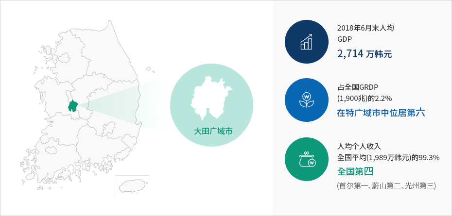

大田现况
- Home
- 大田介绍
- 大田现况
请投资东北亚枢纽城市--大田。
过去40年以来，大田开辟科学韩国的未来。大田是韩国投资环境最好的城市。



| 面积 | 人口 | 经济活动人口 | 进出口 |
|---|---|---|---|
| 540km² | 147万人 | 806万人 | 出口40.49亿美元 进口31.72亿美元 (进出口贸易统计，以2019年为准) |
※ 大田广域市统计资料，以2019年12月31日为准